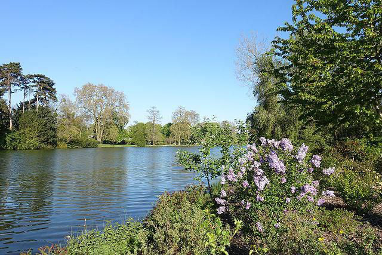

Le lac Daumesnil, situé au cœur du bois de Vincennes à Paris, est un lieu emblématique, chargé d'histoire et apprécié pour sa beauté naturelle. Ce lac artificiel, créé au XIXe siècle, est un exemple parfait de l'aménagement urbain pensé pour offrir un espace de détente et de loisirs aux Parisiens.
Histoire
Le lac Daumesnil, une oasis de verdure au cœur de Paris, idéale pour l’évasion et la détente.
Visiter le lac


La création du lac Daumesnil
Le lac Daumesnil a vu le jour entre 1855 et 1860, dans le cadre des grands travaux de réaménagement de Paris. Sous la direction du baron Haussmann, le bois de Vincennes a été transformé en un parc public accessible à tous, inspiré des jardins anglais. Le lac, alimenté par la rivière de la Marne, a été conçu pour offrir un espace de loisirs et de détente, tout en valorisant la beauté naturelle du site.Son nom rend hommage au général Pierre Daumesnil, célèbre pour son courage pendant les guerres napoléoniennes. La légende raconte qu’il aurait déclaré : « J’ai une jambe de bois, mais elle ne capitulera jamais ! », ce qui en a fait une figure héroïque de l’histoire française.
Un lieu chargé d’histoire
Dès son inauguration, le lac Daumesnil est devenu un lieu de promenade prisé par les Parisiens. Les deux îles principales, reliées par des ponts pittoresques, offraient un cadre romantique propice à l’évasion. Pendant les guerres mondiales, le bois de Vincennes et le lac ont été utilisés à des fins stratégiques, témoignant ainsi de leur importance dans l’histoire de la ville.Aujourd’hui, le lac conserve son charme d’antan tout en étant adapté aux besoins modernes. Les visiteurs y viennent pour profiter des activités nautiques, se promener ou simplement admirer la faune et la flore qui y prospèrent.
Les merveilles du lac Daumesnil
L’île de Reuilly, l’une des deux îles principales du lac, est un lieu prisé des promeneurs grâce à son architecture pittoresque et son atmosphère paisible. À proximité, des grottes artificielles, des cascades et des ponts ajoutent une touche de mystère et de charme au paysage. Le lac est également un havre pour la faune locale : cygnes, canards et autres oiseaux aquatiques y trouvent refuge, tandis que les rives sont bordées de saules pleureurs et de rosiers. Ce parfait équilibre entre nature et aménagements en fait un lieu exceptionnel où il fait bon se ressourcer.